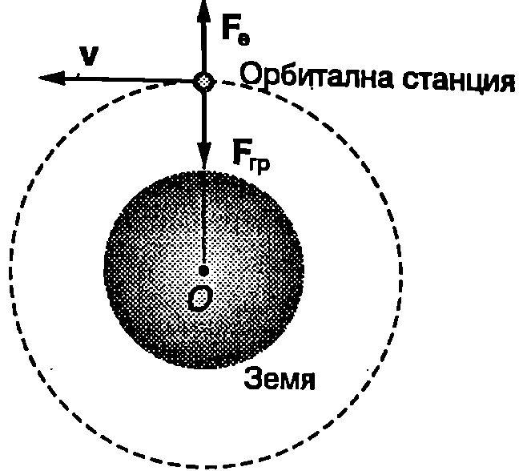
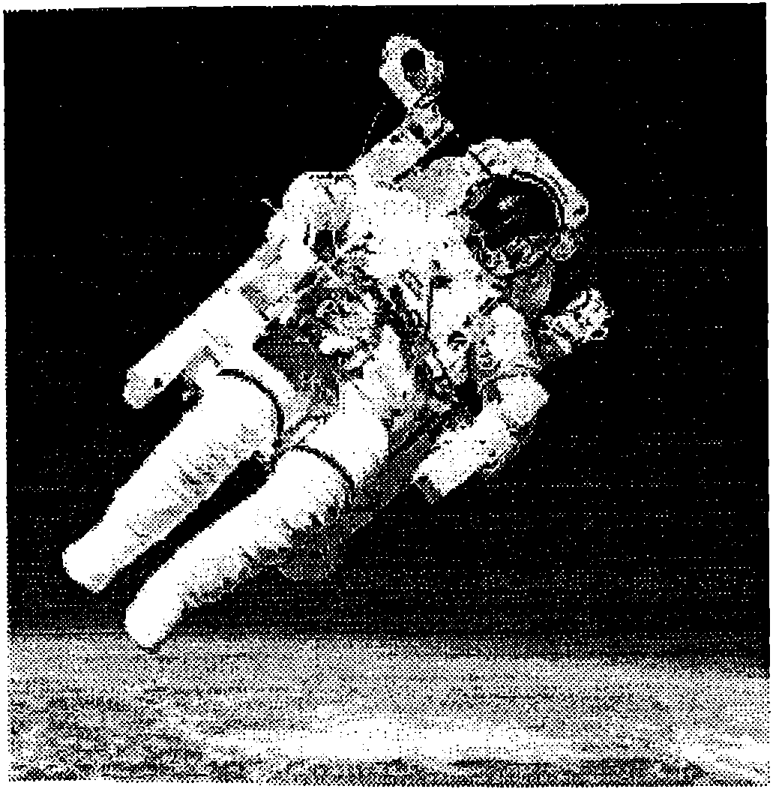
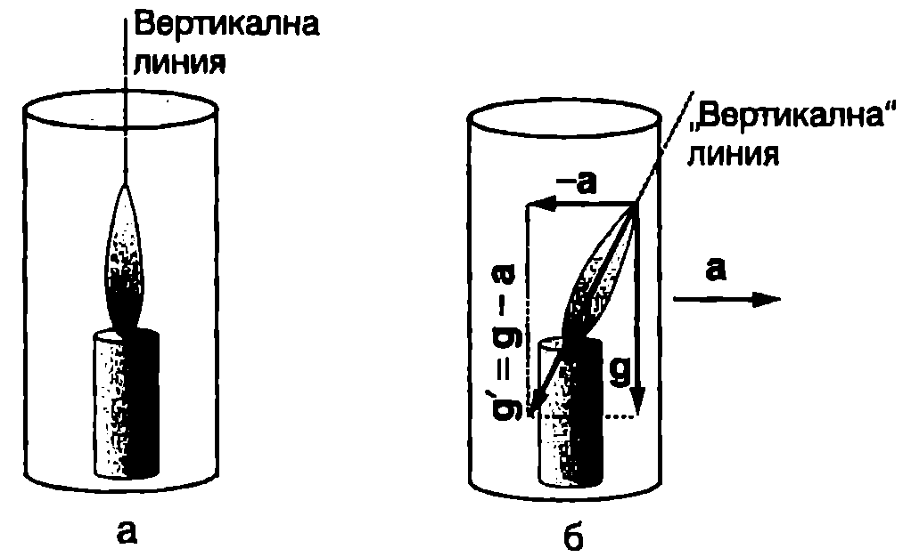
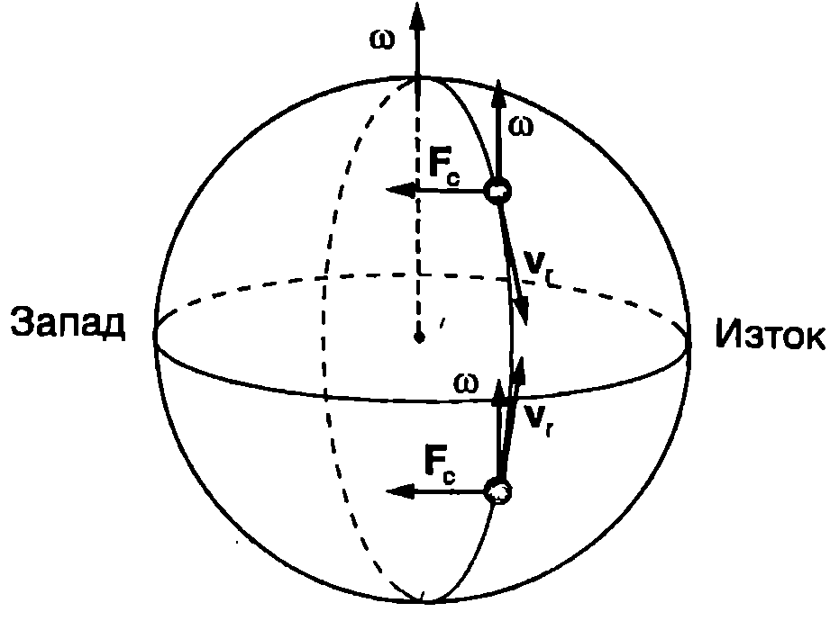
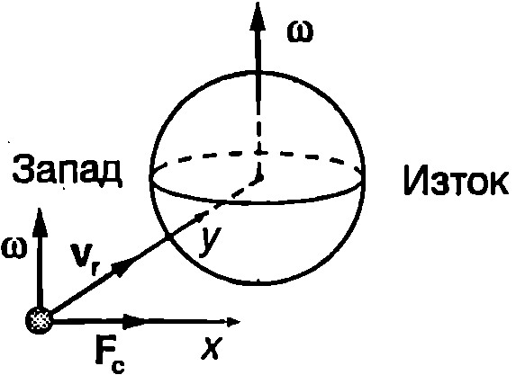
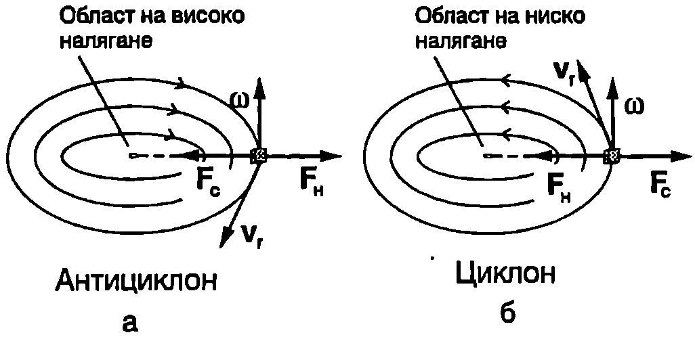
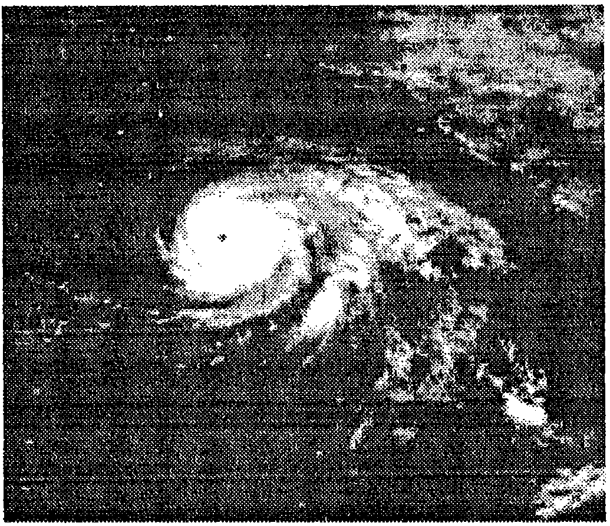
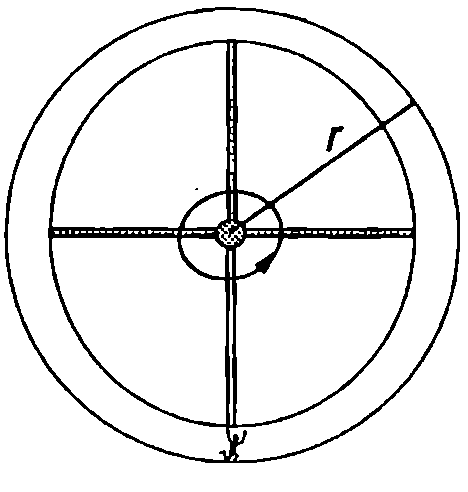
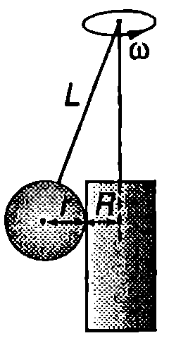

Както беше отбелязано в \ref{sec:4}, в редица задачи по механика може да се пренебрегне денонощното въртене на Земята и нейната повърхност да се разглежда като инерциална отправна система. Тогава силата на тежестта , действаща на дадено тяло, е равна на гравитационната сила на привличане на тялото към Земята. Денонощното въртене на Земята оказва влияние на телата, които са в покой или се движат спрямо земната повърхност, което в някои случаи има съществено значение. За да отчетем това влияние, ще разглеждаме земната повърхност като въртяща се с ъглова скорост неинерциална отправна система, в която действат центробежни и кориолисови инерчни сили.
Сила на тежестта и тегло на телата
\begin{figure}[h!]
\centering
 \caption{Силата на тежестта е равна на векторната сума от гравитационната сила и центробежната инерчна сила .}
\label{fig:7.1}
\end{figure}
\caption{Силата на тежестта е равна на векторната сума от гравитационната сила и центробежната инерчна сила .}
\label{fig:7.1}
\end{figure}
В неинерциалната отправна система, свързана със Земята, на неподвижно тяло действат три сили: гравитационната сила , центробежната инерчна сила и силата на реакция на опората (Фиг. \ref{fig:7.1}). Гравитационните и инерчните сили са масови сили. Ако вземем произволен малък елемент от тялото, независимо къде се намира той на повърхността или вътре в обема на тялото, ще му действа гравитационна сила, правопропорционална на гравитационната маса на елемента, и инерчна сила, която е правопропорционална на инертната му маса. Съгласно с принципа за еквивалентност инертната и гравитационната маса са еднакви. Това дава възможност инерчните и гравитационните сили да се разглеждат съвместно и да се даде по-прецизно определение на силата на тежестта: Силата на тежестта за неподвижно спрямо земната повърхност тяло е равна на векторната сума от гравитационната сила и центробежната инерчна сила, обусловена от денонощното въртене на Земята, които действат на тялото (Фиг. \ref{fig:7.1})
Тялото и опората от Фиг. \ref{fig:7.1} взаимодействат с контактни сили на реакция и . Силата на нормална реакция на опората е приложена към тялото. От условието за равновесие на тялото следва, че
Силата е приложена към опората. Съгласно с третия принцип на механиката тялото и опората взаимодействат с равни по големина и противоположни по посока сили, т.е.
където е отчетено уравнение \eqref{eq:7.2}.
Силата , с която тяло действа на опората, върху която е поставено (или опъва нишката, на която виси) се нарича тегло на тялото. При това се предполага, че тялото и опората (нишката) се намират в покой спрямо отправната система, в която е извършено претеглянето (е измерена силата ). От формула \eqref{eq:7.3} се вижда, че силата тегло на тяло, което е в покой спрямо земната повърхност, съвпада по големина и посока със силата на тежестта . Ще подчертаем обаче, че става дума за две различни сили, които, както беше посочено по-горе, имат различна природа и са приложени към различни тела: силата на тежестта е приложена към тялото, а теглото към опората (нишката), която го удържа в покой.
Зависимост на земното ускорение от географската широчина
Силата на тежестта \eqref{eq:7.1} е пропорционална на масата на тялото и може да се представи във вида
където е ускорението на свободно падане (земното ускорение). Ако приемем, че Земята е еднородно кълбо, гравитационната сила е насочена към центъра на Земята, а големината и не зависи от това, в коя точка от земната повърхност се намира тялото (например на полюса или на екватора). Големината на центробежната инерчна сила зависи от географската широчина: тя е максимална на екватора, където km и става нула на полюса (). Поради това земното ускорение също зависи от географската широчина. То има минимална стойност на екватора, където силите и са насочени в противоположни посоки, и достига максимална стойност на полюсите, където .
И така, денонощното въртене на Земята води до зависимост на земното ускорение от географската широчина. Ще отбележим, че в действителност Земята не е идеално еднородно кълбо. Тя е сплескана към екватора точките от земната повърхност около екватора са по-далеч от центъра на земята, отколкото полюсите. Освен това съдържа нееднородности (например големи рудни находища). Затова гравитационната сила също зависи от положението на тялото, което е причина за допълнителни различия в стойностите на земното ускорение, измерени в различни географски райони.
Безтегловност
За неподвижен спрямо земната повърхност предмет или живо същество силата на тежестта се уравновесява от силата на нормална реакция на опората. Силата на тежестта е масова сила, докато силата на реакция е контактна сила тя е приложена към повърхността на тялото, която е в контакт с опората. По аналогичен начин например на всеки вътрешен орган от човешкото тяло действа сила на тежестта, която се уравновесява от силите на реакция, с които му действат съседните органи. Така вътрешните органи и части на тялото се притискат един към друг и взаимно се деформират, което създава специфично физиологично усещане за тегло.
\begin{figure}[h!] \centering  \caption{В отправната система на орбиталната станция гравитационната сила се уравновесява от центробежната инерчна сила и космонавтите се намират в състояние на безтегловност.} \label{fig:7.2} \end{figure}
Да си представим сега, че се намираме в покой спрямо неинерциална отправна система, в която геометричната сума от всички масови сили (гравитационни и инерчни) е равна на нула. В този случай силите на реакция също са нула, т.е. вътрешните органи и части на тялото не се притискат един към друг усещането за тегло се заменя с особеното чувство за безтегловност.
От гледна точка на наблюдател от инерциална отправна система състояние на безтегловност се реализира при свободно падане в гравитационно поле. Тогава на тялото не действат външни сили на реакция, а всички негови части се движат с еднакво ускорение (ускорение на свободно падане), породено единствено от гравитационната сила. При такова движение между съседните части на тялото не възникват сили на реакция (натиск или опъване) и те не се деформират.
Състояние на безтегловност се получава например при космически полети по околоземна орбита. От гледна точка на наблюдател от неинерциалната отправна система (орбиталната станция) гравитационната сила се уравновесява от центробежната инерчна сила (Фиг. \ref{fig:7.2}). За наблюдател от инерциалната отправна система, свързана с неподвижните звезди”, орбиталната станция през цялото време се намира в състояние на свободно падане в гравитационното поле на Земята.
\begin{figure}[h!] \centering  \caption{На 7 февруари 1984 година американският астронавт Брус Маккандлес се отделя от космическата совалка и преминава на самостоятелна орбита на височина 102 km над земната повърхност. Астронавтът се намира в състояние на безтегловност.} \label{fig:7.3} \end{figure}
Независимо, че в условие на безтегловност се изменят редица жизнени функции, специални тренировки и профилактични мерки позволяват космонавтите да живеят и работят продължително време при такива условия.
Пример 7.1
Момиче с маса 50 kg се претегля на медицински везни, поставени в асансьор. В каква посока и с какво ускорение се движи асансьорът, ако везните показват 40 kg? Земното ускорение да се приеме за 10 . \end{psexample}
Решение
Скалата на везните е в килограми, но в действителност те измерват теглото, т.е. силата на натиск, който в случая момичето упражнява върху везните. Теглото на тяло, което е в покой спрямо земната повърхност, в (съвпада по големина и посока със силата на тежестта). Когато отправната система, в която се извършва претеглянето, се движи спрямо земната повърхност с ускорение , теглото е еднакво по големина и посока с резултантната от силата на тежестта и инерчната сила
Тъй като в движещия се асансьор теглото на момичето намалява (), може да се направи изводът, че векторите и са еднопосочни, т.е. ускорението на асансьора е насочено вертикално надолу. Като използваме данните от условието, получаваме откъдето определяме големината на ускорението на асансьора
Забележка. В направеното разглеждане се предполага, че отправната система, свързана със земната повърхност, е инерциална и силата на тежестта е равна на гравитационната сила, действаща на телата в асансьора. По-детайлният анализ, който отчита въртенето на Земята около нейната ос и свързаните с това въртене инерчни сили (центробежни и кориолисови), е сложен и в повечето случаи води до пренебрежимо малки поправки.
Пример 7.2
На пода на асансьор е закрепен затворен цилиндър с вода, на дъното на който е потопено оловно топче. Установявате, че в даден момент топчето се откъсва от дъното, достига горната основа на цилиндъра и се притиска към нея. Какъв извод можете да направите от тези наблюдения? \end{psexample}
Решение
Резултантната от силата на тежестта и инерчната сила, които действат на тяло с маса в асансьора, е
Подобни задачи от хидростатика в неинерциални отправни системи, които се движат постъпателно с постоянно ускорение , е най-лесно да се “пренесат” на планета, където ускорението на свободно падане е т.е. земното ускорение да се замени с ефективно ускорение . След това се прилагат законите на хидростатиката в познатия им от училищния курс по физика вид.
В случая, за да се притиска оловното топче към горната основа на цилиндъра, трябва ефективното ускорение да е насочено вертикално нагоре. Това се постига, когато ускорението на асансьора е насочено надолу и е по голямо от земното (.
Пример 7.3
Запалена свещ е поставена на дъното на дълбок стъклен цилиндър (Фиг. \ref{fig:7.4}a). Как ще е насочен пламъкът на свещта, ако цилиндърът започне да се движи хоризонтално с ускорение ? \end{psexample} \begin{figure}[h!] \centering  \caption{} \label{fig:7.4} \end{figure}
Решение
Задачата се решава най-лесно, ако се използва описаният в Пример~\ref{ex:7.2} подход. Посоката на ефективното ускорение в неинерциалната отправна система, свързана със стъкления цилиндър, е показана на Фиг. \ref{fig:7.4}б. Векторът определя и посоката на “вертикалата”. Пламъкът ще се издига “вертикално” нагоре, т.е. ще се наклони напред.
Кориолисови сили
Когато едно тяло се движи спрямо земната повърхност, освен центробежната инерчна сила му действа и кориолисова сила (вж. уравнение \eqref{eq:6.13} на стр. 46) , където е относителната скорост на тялото (спрямо Земята), а е ъгловата скорост на въртене на Земята около нейната ос. Под действие на кориолисовата сила движещите се тела се отклоняват в направление, перпендикулярно на относителната скорости, или оказват натиск върху преградите, които не позволяват такова отклонение. За тела, които се движат към екватора (Фиг. \ref{fig:7.5}), кориолисовата сила е насочена на запад. Ако телата се движат към полюсите, е насочена на изток. Обърнете внимание, че и в двата случая в северното полукълбо е насочена надясно спрямо посоката на движение, а в южното полукълбо наляво. Затова на реките в северното полукълбо под действие на кориолисовите сили се подронват десните брегове, а на реките в южното полукълбо левите брегове.
Кориолисовите сили също така водят до отклоняване на свободно падащите тела на изток. Действието на кориолисовите сили се отчита при пресмятане траекториите на ракети и далекобойни снаряди, движението на жироскопи и др.
\begin{figure}[h!] \centering  \caption{Посоката на кориолисовата сила се определя по правилото на дясната ръка.} \label{fig:7.5} \end{figure}
Пример 7.4
Тяло е пуснато без начална скорост от височина m над екватора. В каква посока и на какво разстояние ще се отклони тялото от вертикалната линия преди да падне на земята? Съпротивлението на въздуха и зависимостта на земното ускорение от височината да не се отчитат. \end{psexample}
Решение
Записваме уравнението за движение на тялото в неинерциална отправна система, свързана със земята
където е относителното (спрямо земната повърхност) ускорение на тялото, в неговата маса, е гравитационната сила, - преносната (центробежна) инерчна сила, а е кориолисовата сила. Заместваме и , съкращаваме масата и получаваме
където е относителната скорост на тялото (спрямо земната повърхност), а е ъгловата скорост на въртене на Земята.
За да се определи траекторията на тялото, трябва да се реши полученото векторно уравнение (при ), което, записано по компоненти, представлява система от три линейни диференциални уравнения от втори ред с постоянни коефициенти (ще напомним, че компонентите на ускорението и на скоростта на материална точка са съответно втори и първи производни на нейните координати , и по времето ). Задачата може обаче да се реши елементарно, като се използва приближение, което значително я опростява, а същевременно дава достатъчно точен количествен резултат за основния ефект, предизвикан от кориолисовата сила отклонението на тялото на изток.
Тъй като при свободното падане определяща роля има силата на тежестта, а кориолисовата сила внася само малка поправка към ускорението , можем с приближение да смятаме, че относителната скорост , през цялото време е насочена вертикално надолу (успоредно на земното ускорение ). Тогава кориолисовата сила винаги ще е насочена на изток (Фиг. \ref{fig:7.6}). Под нейно действие тялото се отклонява на изток. Движението на тялото с приближение може да се разглежда като сума от две прости движения: свободно падане вертикално надолу с ускорение и хоризонтално движение на изток с ускорение . При вертикалното движение скоростта се променя по закона и тялото достига земната повърхност за време .
Хоризонталното движение е с променливо ускорение. За време тялото изминава разстояние . От друга страна откъдето определяме скоростта
От началното условие при следва, че константата е равна на нула. Заместваме и в уравнението и след интегриране получаваме
При хоризонталното отклонение е нула ( = 0), откъдето следва, че . Заместваме в полученото равенство времето на полета и получаваме търсеното отклонение на тялото на изток
Независимо че ефектът е малък, той е бил експериментално наблюдаван още в средата на 19. век в опити с падащи тела в дълбоки шахти.
Влияние на кориолисовите сили върху процесите в атмосферата
Движението на въздуха от атмосферата се извършва под действие на различни сили: сила на тежестта, сили на натиск, дължащи се на изменението на налягането във вертикално и в хоризонтално направление, сили на вътрешно триене между въздушни слоеве, които се движат с различна скорост, и инерчни сили. Ще се ограничим с разглеждането на хоризонтален въздушен поток, когато всички сили, действащи във вертикално направление се уравновесяват (това са силата на тежестта и вертикалната сила на натиск). Когато скоростта е малка, силите на вътрешно триене могат да се пренебрегнат. Тогава в отправна система, свързана със земята, на всеки малък обем с маса от въздушния поток действат две хоризонтални сили: силата на натиск , дължаща се на изменението на налягането в хоризонтално направление, и кориолисовата сила .
\begin{figure}[h!] \centering  \caption{Под действие на кориолисовата сила падащите тела се отклоняват на изток.} \label{fig:7.6} \end{figure}
\begin{figure}[h!] \centering  \caption{} \label{fig:7.7} \end{figure}
При установили се бавни криволинейни хоризонтални движения на въздушните маси се постига приблизителен баланс на кориолисовите сили и силите на натиск. Разликата в техните големини е много малка и определя закривяването на траекторията. Типичен пример в това отношение са циклоните и антициклоните. На метеорологичните карти циклоните (области на ниско налягане) и антициклоните (области на високо налягане) се представят с изобари криви, които са геометрично място на точки с еднакво налягане. Силите на натиск са перпендикулярни на изобарите и са насочени от областите на високо налягане към областите на ниско налягане (Фиг. \ref{fig:7.7}). Кориолисовата сила, която балансира силата на натиск, трябва да е насочена в противоположна на силата посока. По правилото на дясната ръка определяме, че кориолисовата сила изпълнява това условие, ако скоростта на разглеждания обем въздух е насочена по допирателната към съответната изобара. Следователно за северното полукълбо движението на въздушните маси се извършва по изобарите по посока на часовата стрелка за антициклоните (Фиг. \ref{fig:7.7}а) и в обратна на часовата стрелка посока за циклоните, т.е и в двата случая областта на високо налягане се намира отдясно на въздушния поток. В южното полукълбо е обратно: областта на високо налягане е отляво на въздушния поток, т.е. за антициклона движението на въздушните маси е в обратна на часовата стрелка посока, а за циклона — по часовата стрелка. Тези изводи се потвърждават от метеорологичните наблюдения и спътниковите снимки (Фиг. \ref{fig:7.8}).
\begin{figure}[h!] \centering  \caption{Спътникова снимка на циклон в северното полукълбо. Въздушните маси се движат обратно на часовата стрелка около центъра на циклона, който представлява област на ниско налягане.} \label{fig:7.8} \end{figure}
Задачи
- Определете разликата , свързана с въртенето на Земята, между земното ускорение на: а) полюса и екватора; б) полюса и точка с географска широчина .
Земята има радиус и се върти около оста си с период s.
-
В научнофантастичен разказ се предлага идеята за създаване на изкуствена гравитация на космически кораб, подобна на земната (). Корабът има форма на велосипедно колело с външен радиус (Фиг. \ref{fig:7.9}). Какъв трябва да е периодът на въртене на кораба около неговата ос?
-
Топче с радиус виси на нишка с дължина и се опира във вертикален цилиндър с радиус . Цилиндърът и точката на окачване на нишката са закрепени на оста на центробежна машина. (Фиг. \ref{fig:7.10}). При каква ъглова скорост на въртене на системата силата на натиск на топчето върху стената на цилиндъра става равна на нула?
-
Защо мостовете са изпъкнали, а не са плоски или вдлъбнати? За да отговорите на този въпрос, решете следната задача: Камион с маса се движи с постоянна скорост по мост, който представлява дъга от окръжност с радиус . Определете силата на натиск (теглото) на камиона върху моста, когато се намира по средата на моста, ако мостът е: а) изпъкнал; б) вдлъбнат.
-
Ракета лети със скорост = 1500 m/s no траектория, която с приближение може да се приеме за хоризонтална права. Географската широчина е . Ракетата трябва да порази цел, намираща се на разстояние km. Определете страничното отклонение , предизвикано от въртенето на Земята.
\begin{figure}[h!] \centering  \caption{} \label{fig:7.9} \end{figure}
\begin{figure}[h!] \centering  \caption{} \label{fig:7.10} \end{figure}